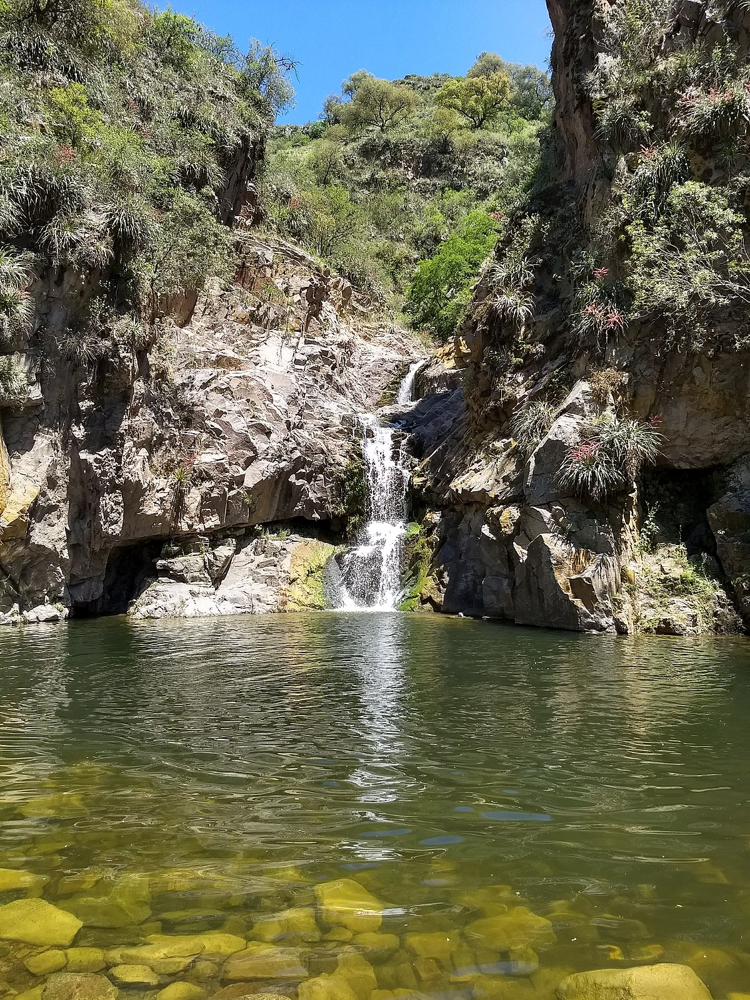
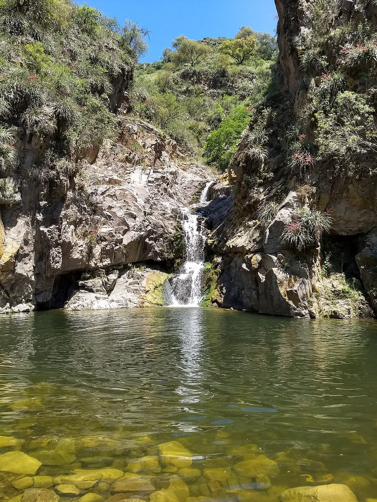

Circuito Sendero Los Quebrachitos:

 

Bosque nativo, cascadas y una Capilla Unica
sólo 8 km de la zona céntrica de Unquillo (y a 40k de cordoba ciudad), se encuentra un destino ideal para principiantes del senderismo. Dentro de la Reserva Hídrica, Natural y Recreativa Los Quebrachitos, con casi 5000 hectáreas, es posible recorrer senderos boscosos entre arroyos y vertientes. A través de sus rincones, se pueden hallar ejemplares con más de un siglo de algarrobos, quebrachos blancos, molles, cocos, acacias y moras, entre otros ejemplos de flora autóctona. La reserva está atravesada por los afluentes del río Unquillo: los arroyos Cabana y las Ensenadas. ¿Un imperdible ? La Cascada de Los Chorrillos, ideal para refrescarse en los días de verano. Por ultimo, y no menos importante, se puede visitar la Capilla Buffo, constuida como homenaje del italiano Guido Buffo a su esposa y a su hija, víctimas de tuberculosis. Contruida en forma de la flor del cardo santo, destaca por su particular mezcla de acústica e iluminación, y paredes con frescos renacentistas que hablan de la Crecion y el Amor.

Ficha tecnica Dificultad física: moderada Recorrido: 9 km. Duración: 4 horas y media. Punto de partida y fin de recorrido: Casa Museo Buffo 31.192426, -64.364361 Perfil de elevación: Altura máxima: 1063 msnm. Altura mínima: 817 msnm. Desnivel positivo acumulado: 368 m.